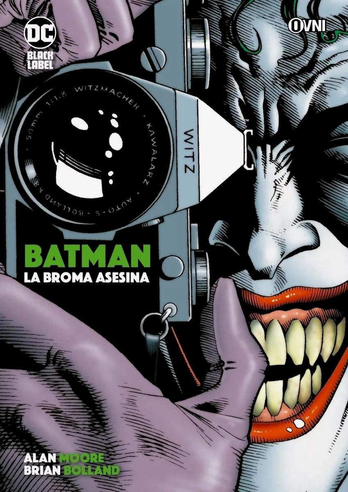

Nosotros
¿Quién soy?
Soy el eco de la venganza, el susurro de la justicia para aquellos cuyos gritos no pueden ser escuchados". En cada palabra, resuena la profunda resonancia de su misión. No es solo un título o un nombre en los registros de Gotham ; es una responsabilidad que él carga, una cruz que lleva con una mezcla de devoción y sacrificio."Soy el guardián de los inocentes, el protector de los indefensos", podría añadir, su tono revelando tanto determinación como pesar por los sacrificios que ha debido hacer en su vida. Batman no es solo una figura de temor para los criminales, sino también una figura de esperanza para aquellos que claman por justicia en una ciudad corrupta. Pero más allá de las palabras que elija, la esencia de Batman trasciende lo que pueda decir en una respuesta. Es la suma de todas las partes de Bruce Wayne que decidió convertirse en algo más, algo que encarne el símbolo de la lucha contra la injusticia y el crimen. Es un hombre impulsado por una pérdida irreparable y una determinación incansable.
En cada sombra, Batman representa el lado oscuro de la justicia, un héroe marcado por la tragedia personal pero elevado por la fuerza de su voluntad. Su presencia es un faro de esperanza en la noche, un recordatorio de que incluso
en la oscuridad más profunda, la luz de la justicia puede brillar.A través de su determinación incansable y su firme compromiso con un código moral inquebrantable, Batman se convierte en el símbolo de lo que una persona puede lograr
cuando se enfrenta a la adversidad con valentía y resolución. Más allá del disfraz y la tecnología, él es un testamento viviente de que el poder verdadero reside en la capacidad de hacer el bien incluso cuando el mundo parece estar
en su peor momento.Así, Batman no es simplemente un héroe enmascarado; es la personificación de la lucha eterna por la justicia, un ser humano elevado a la categoría de mito por su dedicación a proteger a los inocentes y castigar a los culpables. Su legado trasciende el tiempo y el espacio, inspirando a generaciones con su ejemplo de sacrificio personal.
